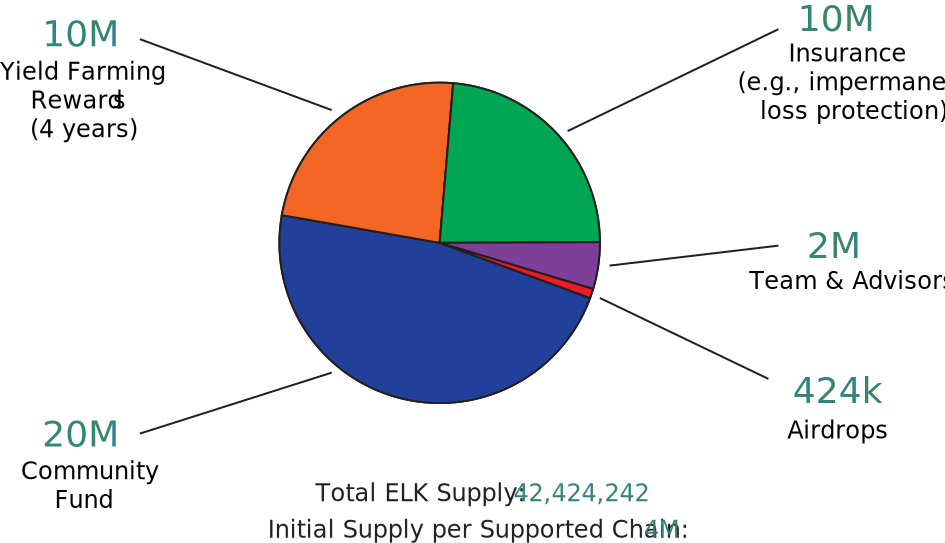

Cross-chain value exchange is the next battleground for cryptocurrencies and the next major hurdle for adoption. Currently, moving or exchanging tokens across chains is a very painful and expensive process. Elk.Finance aims to make this process easy and intuitive. We aim to be the Forex market for the decentralized economy, providing sub-second value transfers across chains. "Any chain, anytime, anywhere" is our motto. Join us as we embark on this exciting adventure!
The ELK token is an ERC20-compatible utility token that underpins the Elk.Finance ecosystem. Central to the design of the Elk network is the fact that all liquidity pools pair exchange tokens with ELK. This design decision allows for sub-second transfer of value across chains and provides deeper liquidity for pools, reducing slippage and fees. ELK also doubles as the governance token for the Elk network.
Elk.Finance aims to support cross-chain swaps of arbitrary tokens at sub-second speeds. By combining a state-of-the-art liquidity pooling system with a decentralized peer-to-peer network, we can achieve fast, trustless, and cheap swaps across diffrerent chains. We believe value transfer across chains will play a large role in the adoption of cryptocurrencies over the coming years. Current solutions to that problem are slow and expensive. Elk.Finance will change that.
In order to facilitate cross-chain value transfers and payments with minimal risk, Elk.Finance will release a stablecoin called CHFT. Upon release, CHFT will be the first cross-chain stablecoin based on a gyroscopic design.
Our community has the opportunity to participate in yield farming by providing liquidity pairs to bootstrap the Elk network and locking these pairs in staking contracts. The bulk of ELK tokens will, therefore, be distributed to early adopters of the Elk network. The sooner you join, the larger your rewards will be!
At Elk.Finance, we believe in taking special care of our liquidity providers. In particular, it would not do if a liquidity provider decided to participate in the Elk network and suffered from impermanent loss (IL) as a result. "Investor" in the network should not walk away with less, ever! Therefore, we are going to implement IL protection for ELK Liquidity Pools. This insurance will take the form of additional ELK token payments (to be claimed as part of the staking contracts) in case the price of ELK drops drastically.
Note that in order to benefit from IL protection, you will need to stake your liquidity pairs! Details and tutorials will be released in a blog post.
We are starting with the Avalanche blockchain and will soon after support Polygon (MATIC), Binance Smart Chain, Ethereum, and others. The reason we are starting with Avalanche is because we plan for Avalanche to be a little bit more "central" to Elk.Finance than others. Avalanche truly is a chain apart (so to speak) and has a very bright future.
Below is an overview of the Elk.Finance roadmap* for 2021.
* Note that all dates in the roadmap are estimates and subject to change.
The figure below shows the distribution of ELK Tokens. Elk.Finance is a community-driven project. The founding team members and advisors will be allocated a total of 2 million ELK tokens (a little under 5% of the total supply) with a 3-year vesting period based on achieving milestones. 10 million ELK tokens will be provided as incentives to liquidity providers. Another 10 million will be allocated to an insurance fund that will protect liquidity providers against impermanent loss. 1% of ELK tokens will be dedicated to airdrops and marketing efforts. Finally, 20 million ELK tokens will be locked in a community fund and their use will be voted by the community. We aim for a slow release of ELK tokens over the years.
We will distribute the 10 million liquidity provisioning tokens over the years to liquidity providers with halving every year according to the following schedule:
The insurance fund token will be distributed to protect liquidity providers against impermanent loss up to a limit of the daily distributed rewards for liquidity provisioning. For example, in the first year, no more than 5 million ELK tokens will be paid by the insurance fund (if applicable), thereby limiting inflation. The community fund tokens will initially remain locked away and their distribution will be performance according to governance decisions by ELK token holders.
Note that initially the token release schedule will slightly vary across chains based on the start of yield farming. Each chain will start with a maximum of 4 million ELK tokens, allocated in the same proportions described above.
Elk.Finance is currently composed of four team members with wide-ranging experience. Unlike many teams in this space, our roots are technical. We are geeks and experts in Javascript, Solidity, and all things blockchain. We are not marketing or business folks: we are geeks who strongly believe in this project and have spent countless nights working on its initial design and refinement. We are committed to delivering the best technology to our users.
Elk.Finance's founder, Ba'al, is a systems architect with 17 years of experience and early blockchain astronaut who has been in the space since 2011. Our lead developer, Howitzer, is a Javascript and Solidity expert with almost 6 years of experience. Our third developer, Bob, is a DevOps expert. Our product manager, Elktra, has 5 years of experience working at top companies.
We are also advised by several academics, finance, and blockchain experts.